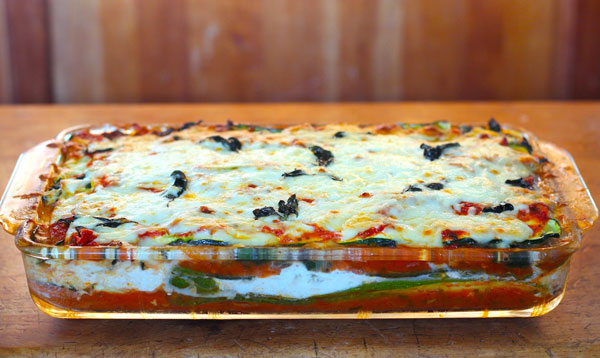

Zuchinni Lasanga

Ingredients
Directions
- Preheat oven to 325 degrees F (165 degrees C). Grease a deep 9x13 inch baking pan.
- Slice zucchini lengthwise into very thin slices. Sprinkle slices lightly with salt; set aside to drain in a colander.
- To prepare the meat sauce, cook and stir ground beef and black pepper in a large skillet over medium high heat for 5 minutes. Add in green pepper and onion; cook and stir until meat is no longer pink. Stir in tomato paste, tomato sauce, wine, basil, and oregano, adding a small amount of hot water if sauce is too thick. Bring to a boil; reduce heat and simmer sauce for about 20 minutes, stirring frequently.
- Meanwhile, stir egg, ricotta, and parsley together in a bowl until well combined.
- To assemble lasagna, spread 1/2 of the meat sauce into the bottom of prepared pan. Then layer 1/2 the zucchini slices, 1/2 the ricotta mixture, all of the spinach, followed by all of the mushrooms, then 1/2 the mozzarella cheese. Repeat by layering the remaining meat sauce, zucchini slices, ricotta mixture, and mozzarella. Spread Parmesan cheese evenly over the top; cover with foil.
- Bake for 45 minutes. Remove foil; raise oven temperature to 350 degrees F (175 degrees C), and bake an additional 15 minutes. Let stand for 5 minutes before serving.
Copyright © Kobe Martin